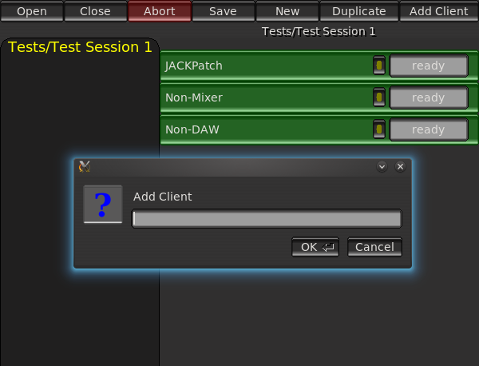

|  |
The Non Session Manager is a graphical interface to the NSM Daemon (nsmd). By default, running the command non-session-manager will start both the GUI and an instance of the daemon.
If a different session root than the default is desired, it may be specified on the command-line as follows:
non-session-manager -- --session-root path |
This command will instruct the instance of nsmd that the GUI starts to use path as the session root.
All session data is stored in per-session sub-directories of the Session Root.
There are two ways to open a session.
The first is to click the Open button and type in the exact name of an existing session. The second is to click on the desired session name in the session list panel on the left side of the interface.
Either way, opening a session saves the current session and switches to the new one. Clients which are capable of switching projects without restarting are instructed to do so, resulting in very fast session open times when such clients are participating in both sessions.
Clients cannot be added until a session is open, either by Open or New.
As each client launches, a status bar representing it will be added to the client list on the right half the interface. For clients which are capable of reporting their progress, a progress bar will also become active.
Only clients supporting the NSM protocol can be told what to open and when to save. Clients not supporting NSM may still be added to the session, but their behavior is undefined other than that NSM can invoke and kill them.
This option saves and closes the current session. All clients participating in the session are told to quit. Note that, as mentioned in the preceding section, in NSM it is not necessary to close one session before opening another.
This option closes the current session without saving.
This option saves the current session, instructing clients supporting the NSM protocol to save.
This option saves the current session (if one is open) and creates a new one. The user is prompted for a session name. Session names are paths under the defined Session Root. A session name may include any number of hierarchical elements, which need not be pre-existing.
For example, one might name a session as follows:
Albums/Magnum Opus/The Best Song Ever Produced |
When inspecting Session Root in a file manager, the above represents exactly the path you would see.
Renaming a session is not currently supported, but one may simply move directories around under Session Root and NSM will detect the new layout upon the next invocation. The session name is not stored anywhere except in its path.
Templates are supported in by the Non Session Manager via duplication. Clicking on the Duplicate button with a session open will prompt the user for a new session name. The daemon will then perform a recursive file copy of the session and open the copy.
Obviously, this should be avoided for sessions containing audio data, as the copy would be very time consuming.
To create a template in the first place, simply use New to start a new session (preferably with a name beginning with "Templates/"), add the desired clients to it, and configure them (e.g. add plugins, make JACK connections, etc.) Now, any time you want to start a session from that template, simply switch to the template session and click Duplicate to create a new session based on it.
This option will prompt the user for the executable name of the client to be added to the session. It is not necessary to type the full path (the PATH environment variable will be searched to find the executable).
When controlling an NSM session distributed across multiple machines, the user will also be required to choose which server to invoke the client on.
If a client dies unexpectedly or is closed by the user (e.g. by closing its main window), Non Session Manager will detect this and two buttons will appear on that Client's status bar. One button, the arrow, causes the client to be restarted and to reopen its project file where it left off. The X button causes the client to be permanently removed from the session.
NSM manages clients together in a session. That's it. NSM doesn't know or care what Window Manager or audio subsystem those clients use--nor should it. Specific clients must be written to persist these environmental factors, and added to sessions when required.
For saving and restoring the JACK connection graph, a simple headless client named jackpatch has been developed and included in the NSM distribution. Simply add jackpatch do your basic template session and all the sessions you base on it will have their JACK connection graphs automatically saved and restored.
The NSM Daemon (nsmd) is launched automatically by the Non Session Manager interface whenever one is not found to be already running at the URL specified in the environment.
Users who are not attempting to setup advanced modes like shared sessions between machines will not normally need to even know that nsmd is running.
But for those advanced users, here are the command-line options for launching nsmd separately from the GUI.
nsmd [--session-root path] [--osc-port port] [--detach] |
The --session-root option allows one to override where Session Root is, from the default of "$HOME/NSM Sessions" (this option can also be passed to the GUI, which will hand it over to the daemon).
--osc-port instructs the daemon to bind to a specific UDP port number instead of selecting an available port automatically.
--detach instructs the daemon to close its standard input and output and go into the background. This is useful for starting the daemon remotely with rsh.
When nsmd starts, it will print a string of the following form its standard output.
NSM_URL=osc.udp://foo.bar.net:17551/ |
This is the OSC URL for the daemon process. If this URL is included in the environment (by either using a fixed port number or starting nsmd early in the initialization process [like in your .xinitrc] extracting the URL from its output) then any NSM capable client will join the current session when started, even if started from outside the Non Session Manager interface (for example, by your Desktop Environment's program launch menu).
When dealing with multiple instances of nsmd, whether they be on the same host or separate hosts, it is most convenient to use fixed port numbers specified with the --osc-port command-line option.
In some situations it is necessary to have different audio programs running on different machines, connected by S/PDIF, analog wiring, or over TCP/IP as achieved by netjack. Usually the reason for doing this is that neither machine is powerful enough to do all the DSP or synthesis alone.
Needless to say, these configurations have historically been extremely difficult to manage--requiring heavy scripting and/or lots of manual setup.
NSM is the first--and currently only--system capable of managing these sessions.
Let us assume the following conditions for our example:
The first step is to decide what port numbers to use. Let's choose 6661 for Host-A and 6662 for Host-B.
If either host is running a firewall, then these ports must be opened explicitly!
To start the daemon on host A:
user@host-a:~$ nsmd --detach --session-root "$HOME/distributed-nsm-sessions" --osc-port 6661 |
To start the daemon on host B (conveniently from host A, via rsh)
user@host-a:~$ rsh host-b nsmd --detach --session-root "\$HOME/distributed-nsm-sessions" --osc-port 6662 |
Note that in the above example, there is a backslash in "$HOME", this is because otherwise the variable would be expanded on the local machine, giving the local value rather than what we intended.
Now that both daemons are running, we can start the Non Session Manager interface with the following command:
user@host-a:~$ non-session-manager --nsm-url osc.udp://host-a:6661 --nsm-url osc.udp://host-b:6662 |
The Non Session Manager interface will then connect to the daemons on both hosts. Creating a new session will create separate session files on each host. When adding a client, the interface will present the user with a choice of which host to invoke the client on. Aside from that it is just like managing any other session. Sessions can be opened, saved, switched between, etc. and the desired effect will be seen on each host.
Simply starting two (or more) instances of the Non Session Manager interface on the same machine (when the NSM_URL environment variable is unset) will result in the ability to have two different sessions open at the same time on the same host. A lock file prevents the two instances from opening the same session.
Imagining a useful application of this feature is left as an exercise for the reader.
Development of the Non Session Manager can be followed with Git:
git clone git://git.tuxfamily.org/gitroot/non/non.git |
There are no pre-compiled binaries available.